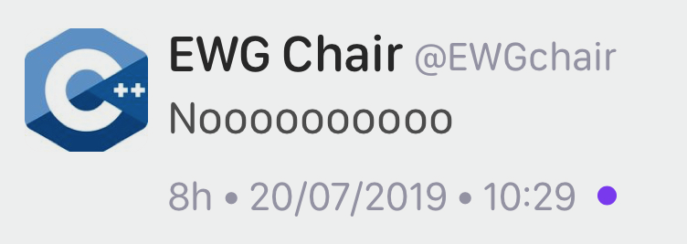
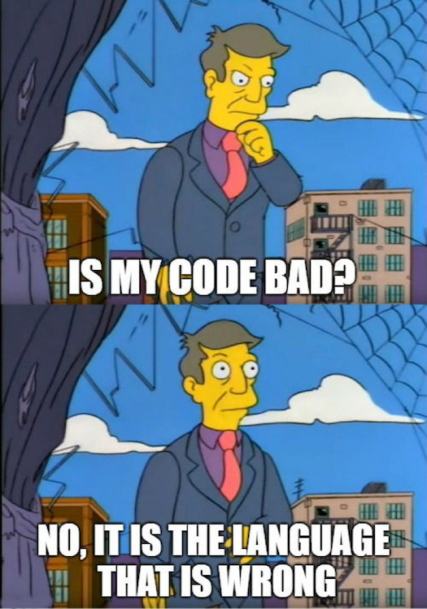
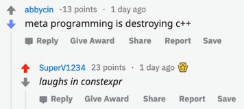

2019-07-25

I wonder what was this tweet about.
C++20 -= Contracts perhaps?
http://www.zverovich.net/2019/07/23/std-format-cpp20.html
https://www.reddit.com/r/cpp/comments/cgqo14/stdformat_in_c20/
https://www.reddit.com/r/cpp/comments/c75ipk/why_stdexpected_is_not_in_the_standard_yet_is_it/
std::expected https://github.com/TartanLlama/expectedhttps://www.zdnet.com/article/microsoft-to-explore-using-rust/
https://www.reddit.com/r/cpp/comments/cegbhj/microsoft_looking_into_rust_as_an_alternative_to_c/

Vittorio Romeo:

This is madness IMHO↩︎